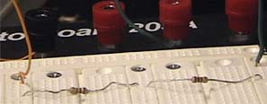
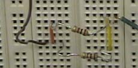

I. Series Circuits
Wire the circuit shown in Fig. 1.
Measure and record I, VR, VR2 and the supply voltage. Calculate
Req.
Data for Part I
|  |
II. Parallel Circuits
Set up the circuit shown in Fig. 2
Measure and record I1, I2, I3, R1, R2, V1, V2, and Vs.
Data for Part II
I1 calculated.0229 A
|  |
III. Complex Circuits
Wire the circuit shown in Fig. 3.
Measure and record Vs1, Vs2, VR1, VR2, VR3, Is1, Is2, I1, I2, I3, R1,
R2, R3.
Vs1 15.16 V
Vs2 4.99 V
VR1 0.46 V
VR2 5.47 V
VR3 9.67 V
Is1 3.23 mA
Is2 0.47 mA
I1 0.47 mA
I2 2.76 mA
I3 3.05 mA
R1 987 ?
R2 1988 ?
R3 2965 ?
| Lab 1: DC Circuits |